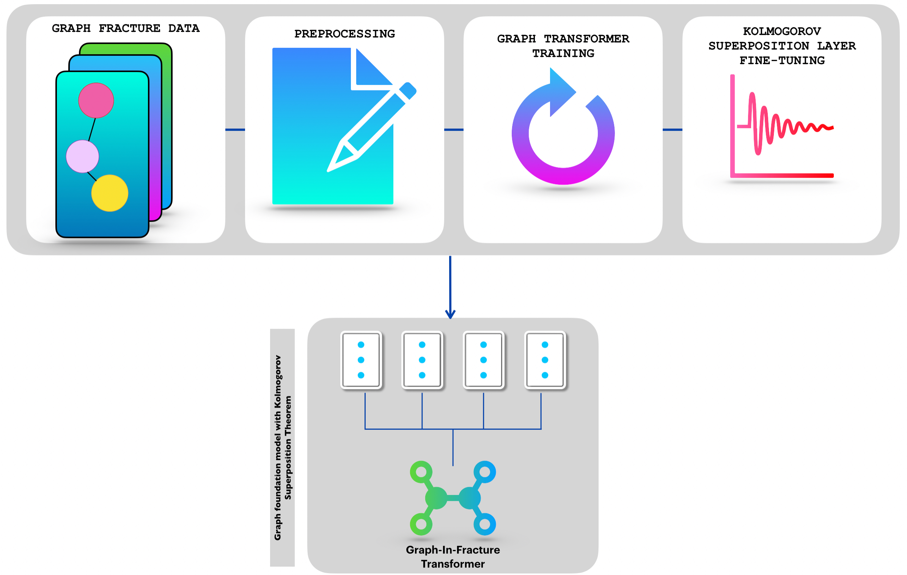
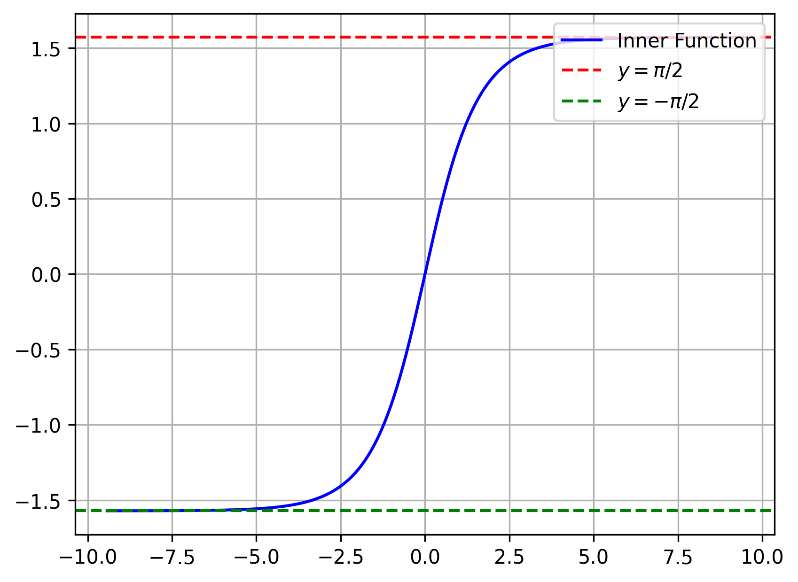
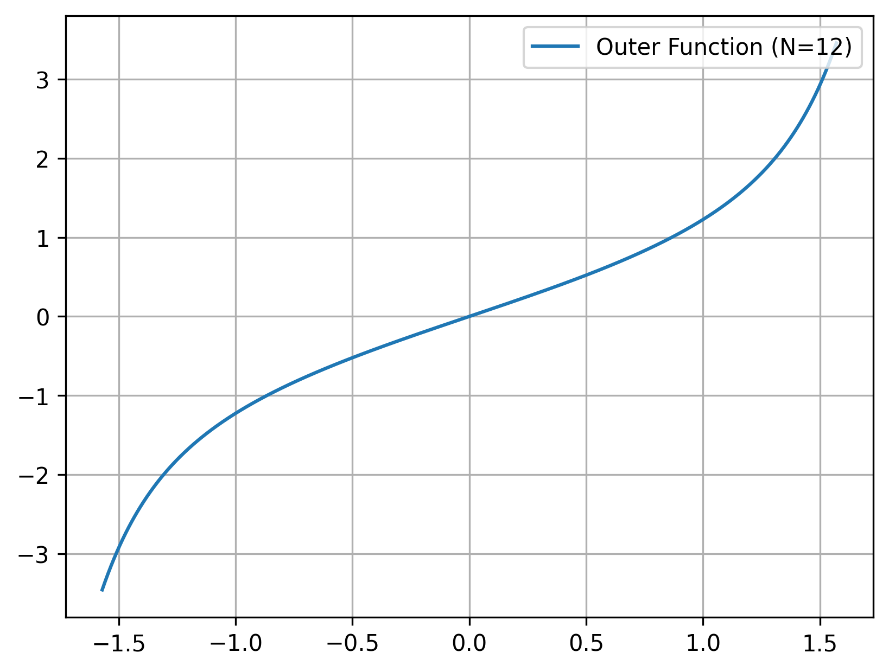
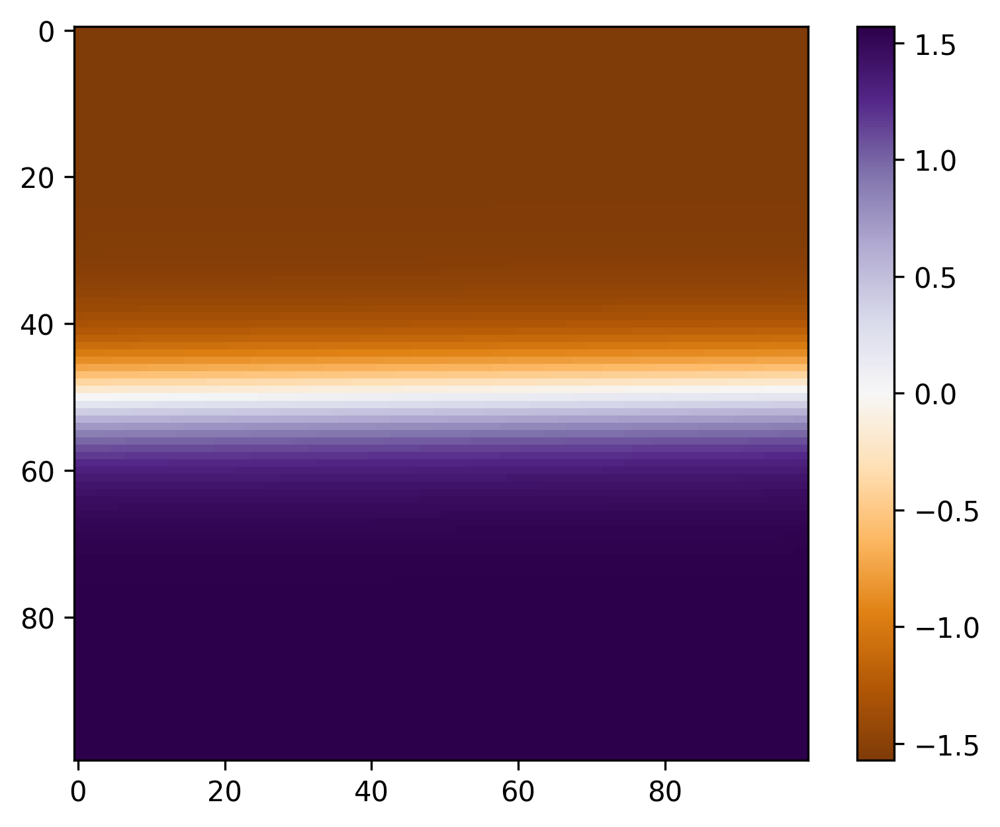
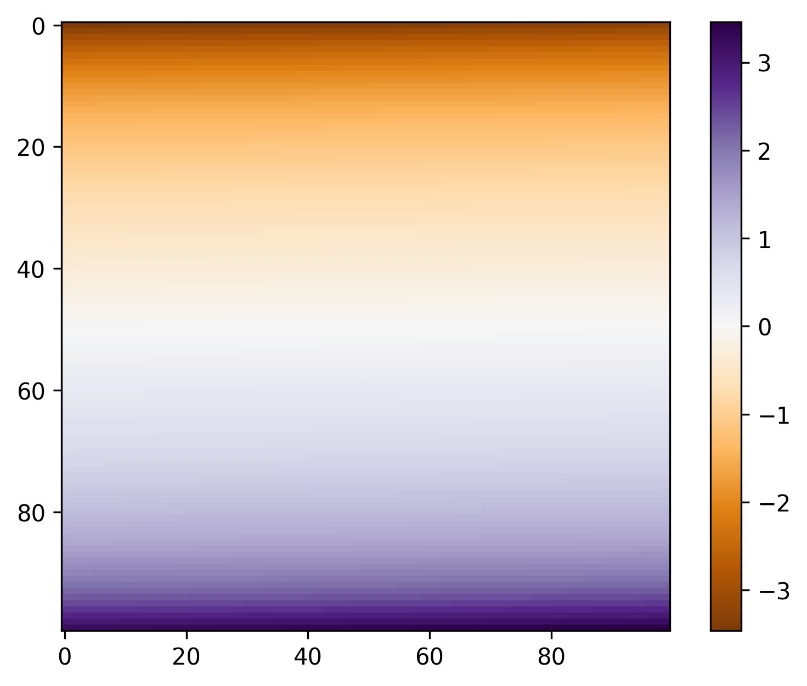
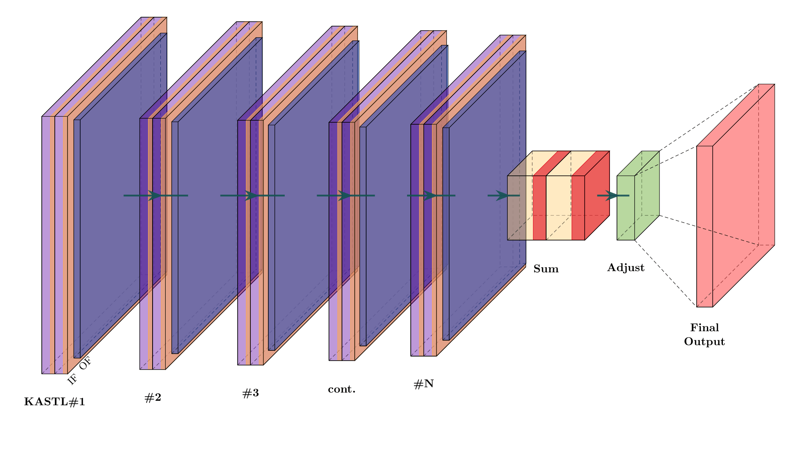

Graph-In-Fracture Transformer with a Kolmogorov-Arnold Superposition Layer
A graph foundation model for discrete fracture networks in porous media.
GIFT-KASTL combines a graph transformer backbone for graph-wide representation learning with a structured downstream refinement layer inspired by the Kolmogorov-Arnold Superposition Theorem. The goal is to model complex fracture-network data in a way that is expressive, scientifically meaningful, and architecturally disciplined.

Discrete fracture networks in porous media naturally form graph-structured scientific data, where prediction depends on both local relationships and long-range graph connectivity. Standard pipelines often struggle to capture that structure cleanly. GIFT-KASTL is built to address this challenge with a two-stage design: a graph transformer learns graph-wide representations, and a KASTL refinement layer introduces structured nonlinear composition at the output stage.
The project targets porous media and fracture-network data, where geometry, connectivity, and interaction structure matter simultaneously.
The graph transformer acts as the global representation learner, aggregating information across the fracture graph before prediction refinement.
KASTL gives the model a distinctive downstream refinement mechanism inspired by the Kolmogorov-Arnold Superposition Theorem.
GIFT-KASTL begins with graph fracture data and preprocessing, then uses a graph transformer backbone to learn global graph representations. The final prediction is refined through a Kolmogorov-Arnold-inspired downstream layer applied at the output stage.
The final stage of GIFT-KASTL introduces a structured refinement layer inspired by the Kolmogorov–Arnold Superposition Theorem. Rather than relying only on the raw transformer output, the model applies a second stage of nonlinear functional composition, giving the system a mathematically structured way to refine graph-based predictions.
For a continuous multivariate function \( f : [0,1]^n \to \mathbb{R} \), the Kolmogorov superposition principle gives the representation
where \( \mathcal{O}_j \) are one-dimensional outer functions and \( \mathcal{I}_{ij} \) are one-dimensional inner functions. In GIFT-KASTL, the inner and outer functions are chosen as follows:
Here \(E_k\) denotes the Euler secant numbers. These choices define the nonlinear composition mechanism used in the KASTL refinement stage.

Inner function. The inner function introduces bounded nonlinear shaping before aggregation, transforming latent graph features into a structured intermediate form.

Outer function. The outer function composes the transformed representation and governs the final output geometry of the refinement stage.

Inner-function heatmap. A visual summary of how the inner-stage transformation behaves across its input domain.

Outer-function heatmap. A complementary view of the output-stage composition used by the KASTL refinement layer.

KASTL architecture. Multiple KASTL units are composed and aggregated through a structured summation-and-adjustment stage to refine the final output of the graph transformer backbone.